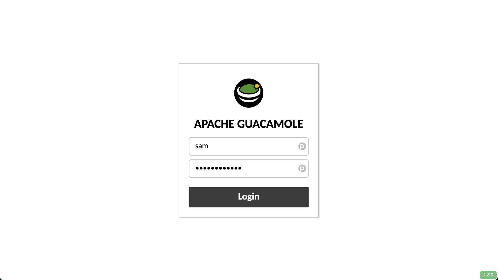
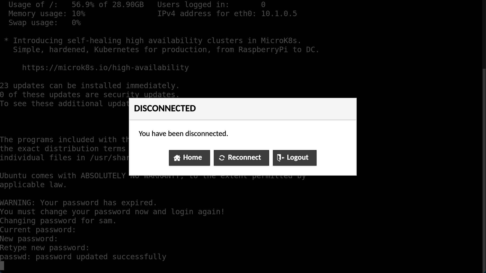

📖 User guide
🥑 Using Guacamole
See the Guacamole user guide. Note that file transfer is disabled by default.
🌱 First login
Before your first login, you will receive two sets of credentials. The 'Web Portal' credentials are for connecting to the Guacamole portal. After you have logged in to Guacamole you will be able to select a SSH (text based) or RDP (graphical desktop) interface to the virtual machine.
You will use the 'VM credentials' to authenticate with the virtual machine whether using the SSH or RDP connection.
When you have both sets of credentials, open your browser and navigate to the Guacamole portal and enter your username and password.

You will be asked to create a new password. Enter your new, secure password into the text boxes and click 'continue'.

Warning
When you click 'continue' you will be taken to the multi-factor authentication setup. However, at this point you must refresh the page and login again with your new password.
After you login with your new password, you will again be directed to setup multi-factor authentication. Scan the QR code using an authenticator app such as andOTP. Produce a one time password, enter it into the text box and click 'continue'.

You will now be taken to the Guacamole home page and presented with the available connections, 'DSVM RDP' and 'DSVM SSH'. For your first login, you must use the SSH connection to be able to reset your VM password. Click on the 'DSVM SSH' connection.
Enter your VM username and press enter.
Next, enter your VM password and press enter.

You will be prompted to change your VM password. Enter the current password, and press enter. Then enter your new, secure password and press enter. Repeat your new password to confirm it is correct.

If you successfully update your password, the message
passwd: password updated successfully will be printed and you will be
disconnected. Click on 'Home' to go back to the Guacamole home page.

You will now be able to connect to the VM in either an SSH or RDP connection using your new VM password.
🖥️ The Xfce desktop
When you start an RDP session, after entering your credentials, you will be presented with the Xfce desktop.
By default there will be two panels on the desktop. A full width panel at the top of the desktop, and a variable width panel with application icons at the bottom.
At the left of the top panel is a button labelled 'Applications'. Clicking on this button will present you with a menu of the installed applications divided into categories.
To the right of the Applications button will be a list of open application windows, useful for switching between and managing open windows.
Next is a view of your workspaces. You can use workspaces to collect sets of windows, for example, you could separate two strands of work on different workspaces. You can click on the workspaces in the view to switch between them.
Finally, at the far right of the top panel is the system tray which contains a set of indicators.
Initially, the bottom panel will contain a selection of application launchers as well as a button to show the desktop (minimise all windows) and a shortcut to open your home directory in the file explorer.
For additional information on using and modifying the Xfce desktop see the official documentation for the desktop environment and common tasks
🗄️ Data
The size of your environment's OS disk (which holds the /home directory) will
depend on the size of the virtual machine deployed. It should have sufficient
capacity to your configuration and cache files as well as the system-wide
packages, configuration and logs. However, this space is limited and difficult
to scale so it is best to avoid using your home directory for working with large
amounts of data. Instead, you will find the directories described below more
suitable.
Your environment contains three directories intended to help the workflow of ingress, analysis and egress. There directories are located at
/data/shared/output
although you will also find symbolic links to these directories in your home
directory (~/) and on your desktop.
Below a description and explanation of each directory is given.
Input data
The input data for your project will be brought into the environment by an
administrator. You will be able to find it in the /data directory. This
directory is visible to all users and is read-only.
If you need to modify the data, for example to clean the data, create derivative data sets or combine data sets you should first copy the data to your home directory or the shared working directory.
Shared working space
The directory /shared can be used when multiple users will need to edit files
or directories. This is the best place to keep large data files you may edit and
you working file. New files and directories created here will belong to the
shared group, which all users are members of, and members of the shared
group will be given read and write privileges. This means that any user will
be able to read, edit and delete files and directories created here.
If you want to give files created outside of /shared equivalent permissions
(for example something you created in your home directory then copied to
/shared) to files created in /shared you can run
chgrp shared myfile
chmod u=rw,g=rw,o= myfile
Output data
The output directory, /output, provides a convenient place to put the products
of your work. This directory is writeable by all users. At the end of a project,
data stored here can be reviewed, and extracted from the environment by an
administrator.
🛍️ Bundled software
The environment comes pre-loaded with a selection of software which aims to cover the most common tasks and popular programming languages.
Here these packages are listed along with their version and how to launch them.
Supported programming languages
| language | version | docs | command or route to application | notes |
|---|---|---|---|---|
| Python | 3.8, 3.9 | (3.8, 3.9) | python3, python3.9 |
see the Python recommended workflow section for recommendations on how to use virtual environments to install and manage Python packages |
| Julia | 1.4 | docs | julia |
see the Julia recommended workflow section for information on how the default julia depot has been configured |
| Rust | 1.47 (cargo 1.46) | docs | rustc, cargo |
|
| Go | 1.13 | docs | go |
|
| R | 3.6 | R |
||
| Octave | 5.2 | docs | octave or Applications → Education → GNU Octave |
|
| C gcc | 9.3 | docs | gcc |
|
| Fortran gfortran | 9.3 | docs | gfortran |
|
| C++ gpp | 9.3 | docs | gcc or g++ |
Development tools
| application | version | docs | command or route to application | notes |
|---|---|---|---|---|
| git | 2.25 | docs | git |
|
| gitkraken | 7.5 | docs | Applications → Development → GitKraken | |
| dbeaver | 21.0 | docs | Applications → Development → DBeaver Community | |
| make | 4.2 | docs | make |
|
| cmake | 3.16 | docs | cmake |
|
| ninja | 1.10 | docs | ninja |
Shells and related
| application | version | docs | command or route to application | notes |
|---|---|---|---|---|
| bash | 5.0 | docs | bash |
the default shell for all users |
| zsh | 5.8 | docs | zsh |
|
| fish | 3.1 | docs | fish |
|
| tmux | 3.0 | docs | tmux |
Editors
| application | version | docs | command or route to application | notes |
|---|---|---|---|---|
| vim | 8.1 | docs with fugitive, syntastic, airline, latexsuite and vim | julia - vim or Applications → Accessories → GVim |
|
| neovim | 0.4 | docs | nvim |
|
| emacs | 26.3 | docs | emacs or Applications → Development → Emacs (GUI) |
|
| atom | 1.56 | docs | Applications → Development → Atom | |
| sublime | 3.2 | docs | Applications → Development → Sublime Text |
IDEs
| application | version | docs | command or route to application | notes |
|---|---|---|---|---|
| vscodium | 1.55 | Applications → Development → VSCodium | community binary distribution of VSCode | |
| pycharm | 2021.1 | docs | Applications → Development → PyCharm Community Edition | |
| rstudio | 1.4 | docs | Applications → Development → RStudio |
Containers
| application | version | docs | command or route to application | notes |
|---|---|---|---|---|
| singularity | 3.7 | docs | singularity |
see the Containers section of recommended workflows for information on using singularity to run containers |
LaTeX
| application | version | docs | command or route to application | notes |
|---|---|---|---|---|
| texlive | 2019 | docs | latexmk, latex, pdflatex, xetex, luatex, ... |
full distribution |
| texstudio | 2.12 | Applications → Office → TeXstudio |
Office
| application | version | docs | command or route to application | notes |
|---|---|---|---|---|
| libreoffice | 6.4 | docs | Applications → Office → (LibreOffice, LibreOffice Base, LibreOffice Calc, LibreOffice Draw, LibreOffice Impress, LibreOffice Math, LibreOffice Writer) |
👔 Recommended workflows
Python
You will notice that very few Python packages, including pip, are installed system wide. The intension is for you to manage as many or as few virtual environments as required for all your strands of work. A strong advantage of this approach is the multiple virtual environments may be created with the packages they need, pinned to particular versions if required, without the worry of maintaining compatible versions globally.
Here is an example. Create a directory for this piece of work
mkdir /shared/new_project
cd /shared/new_project
Create, and enter, a new virtual environment
python3 -m venv ./venv
source ./venv/bin/activate
Your prompt will now (probably) have a prefix like (venv) indicating that you
are using the virtual environment. You will notice that
venv has installed
pip and added it to your path, so
you can now use pip to install and manage Python packages. For example
pip install numpy
pip list
pip uninstall numpy
Other members of your team can use the new virtual environment in the same way
you did (i.e. source /shared/new_project/venv/bin/activate).
You will want to communicate with your team to decide how to manage your virtual environments. For example, deciding how many will be needed, and giving notice of adding/removing/upgrading packages.
A final tip, keeping a
requirements.txt
file is a good way to keep an authoritive list of all packages and their
versions. This way, if anything does go wrong, you can recreate the environment
easily. Also, others may duplicate the environment to ensure your work is
reproducible.
You can create a requirements file based on your currently install packages with
pip freeze > requirements.txt
You may then install the defined packages (with identical versions) with
pip install -r requirements.txt
Julia
The default Julia depot
path has been
changed from ~/.julia to /shared/.julia. This means that for the default
environment will be shared between all users.
Additional environments can be created as required, for example
julia> mkdir("/shared/my_project")
julia> cd("/shared/my_project")
julia> ]
(@v1.4) pkg> activate .
(my_project)> add JSON
See the Pkg.jl documentation for more information on managing packages and environments.
Singularity and containers
You will find Singularity installed on the DSVM. Singularity is a container platform with a focus on HPC. It has a number of advantages over docker when we want to run containers as applications rather than services including, no setup for non-trusted users, MPI support, host system GPU access.
Singularity can pull containers from the Singularity library as well as Docker Hub. For example
singularity pull library://dxtr/default/hpc-tensorflow:0.1
singularity pull docker://alpine
The Singularity Quick Start provides a good introduction to the important commands.